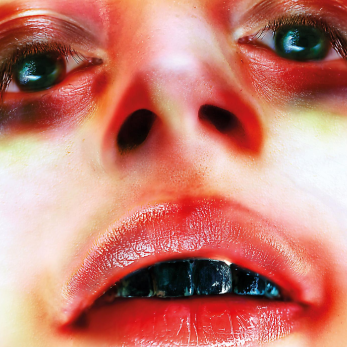
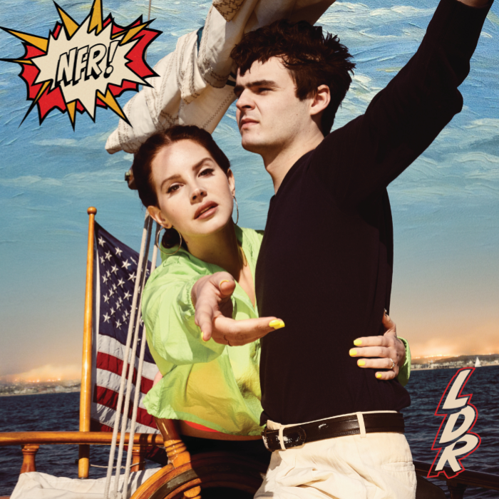
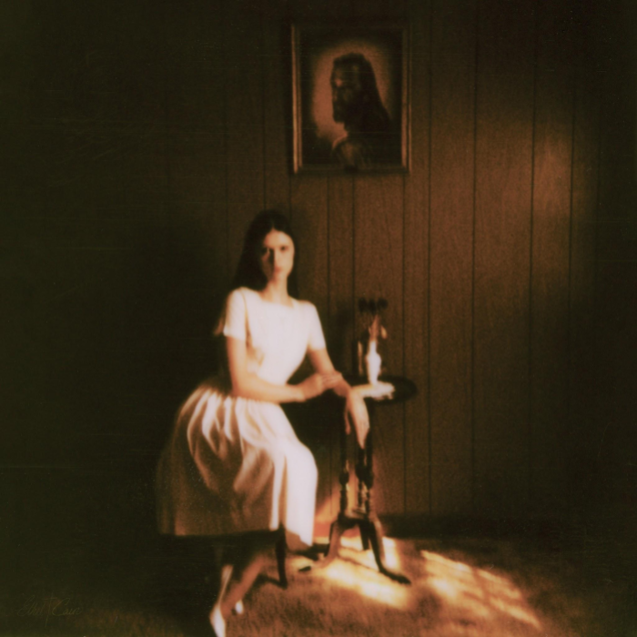
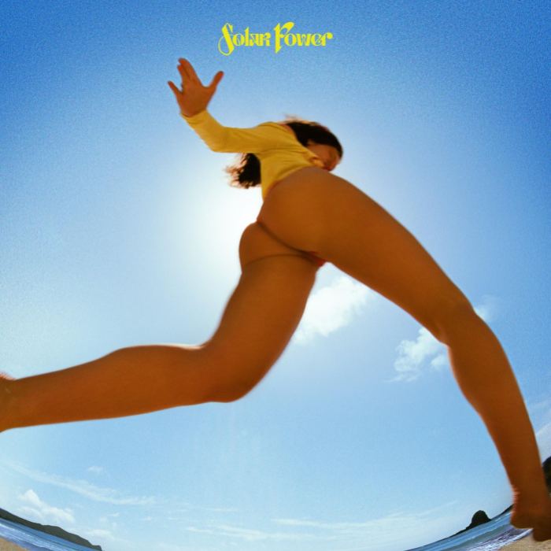
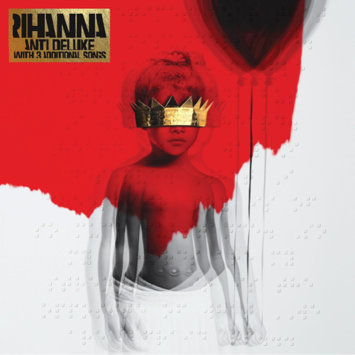
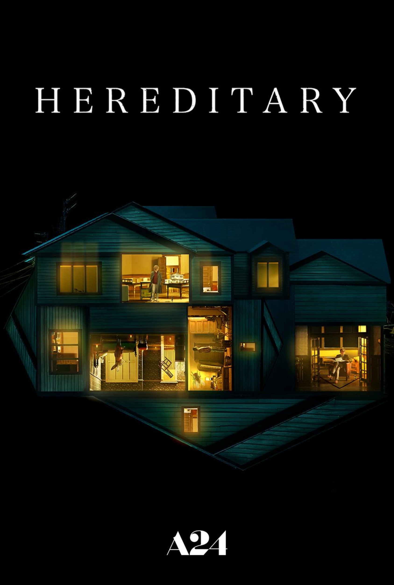
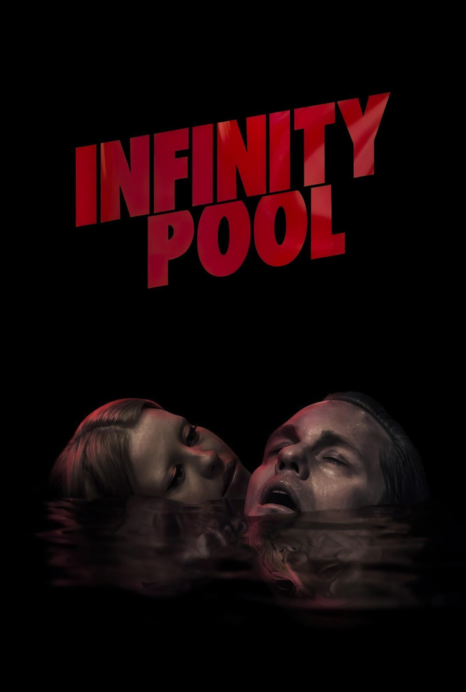
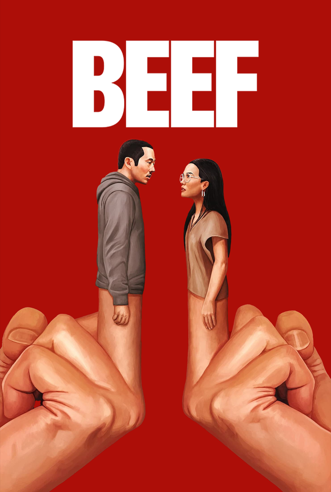

Bitchfork: Arca, Arca
Bitchfork is a monthly review of an album of my choosing. For the first
batch, I wanted to highlight some of my all time favorites, among which is Arca's 2017
magnum opus, Arca. Disclaimer: I have no Spanish skills but we'll talk about that
more later.
I stumbled upon Arca for a number of reasons. I, like many other teenagers, was watching Euphoria back in 2019 and heard a song in the background of the penultimate episode that caught my attention, and then completely forgot about it. I later rewatched it, and decided to look into it, and then discovered that I had been listening to Arca all along because she has worked extensively for FKA Twigs, and had worked on some other things The song in Euphoria was called “Reverie” and is my all-time most played song. Now, I listen to a lot of music (clearly) and generally would consider myself an “album” person in the sense that if I enjoy a track I’ll give the entire album a listen. I honestly don’t know if that’s common and I’m just delusional, but I also see how focused everybody seems to be with singles. TikTok seems to be a huge factor in the music universe, and promoting a song is a lot easier that promoting I imagine. I digress. What I mean to say in all of this is: I’ve listened to many albums in many genres and this stands out as one of the most fascinating and beautiful projects I’ve ever had the pleasure of listening to.
So let’s go track by track!
1. PIEL When I first heard this song I was blown away by the emotion and ambience and I still am now, but what’s changed is what I know about this album. All of her previous albums did not feature any vocals, or at least not leading vocals. So for an earlier Arca fan, this was brand-new territory. Using “Piel” to open the album really sets the tone for the rest of the project. There’s also sort of a sense of dread over the entirety of the track, and it genuinely makes you want to hear what’s next.
2. ANOCHE ”Anoche” is where we start to get more of a sense for the vibes of the rest of the album—it’s hard to describe what the production on the whole project sounds and feels like, the best I can do is like… cyborg. And I mean that literally, it’s equal parts organic and industrial. Anoche opens with a distorted piano and gradually is joined by vocals, and then some more percussion—all of it feels very melancholic and alive.
3. SAUNTER I’ll be honest that this is not one of my favorites but I do think it serves a purpose, which is to sort of let the listener breach. I’ll describe this experience as “working on a stressful steam boat while somebody is playing piano and giving a short vocal performance at the end. It’s a break from the heavier and more sad tracks that opened.
4. URCHIN This is an absolute highlight. This is again, very organic, but also leans into a more industrial-sounding bass. The piano is great, the drop is great, everything is great. If I had to ding it on anything, I’d say the runtime is a tiny bit inflated for casual listening. Sitting down with headphones on, or perhaps in the car is the ideal place for this song.
5. REVERIE This is the one. The only way to describe this song accurately is “complex”. Every time I listen to it I sit and wonder how somebody can even think to create something like this. The song feels like it’s breathing because it’s just filled with sounds, and swells, and so many other micro details that it is just jaw dropping. There is truly nothing I would change about this song, and I wish I could hear it again for the first time. Everything feels like it has purpose, and there’s little imperfections that… make it feel perfect? No notes.
6. CASTRATION This is another instrumentals only one, and it once again is a really nice break from the heavy stuff. I would say this one leans more into the industrial side on paper, but in practice, the organic elements shine through, because they feel like they’re getting closer to you as the song progresses. It’s like a bionic cat aggressively meowing at you as it approaches.
7. SIN RUMBO I was caught off guard when I first heard this because it’s genuinely an amazing vocal performance. Seriously depressing track. Everything sort of feels like it’s crying. Arca: crying, strings: crying, drums: crying, synth: crying. Regardless, it’s another highlight, and I’d honestly go as far as calling it a career highlight. Preceding Arca was a little EP that I was and still am obsessed with called Entrañas and “Sin Rumbo” closed it out. The album version is different, as the original features the sounds of many fireworks going off at the end, but they’re about the same in every other aspect.
8. CORAJE Arca is very much a maximalist, but the production here is stripped back a bit, and it really shows a different and new side of Arca. It’s more intimate—pulling the production back forces the vocals to take center stage, and once again we are just extremely melancholic. I couldn’t tell you what this song is about simply because it’s in Spanish, but I can tell you that it feels like heartbreak and longing.
9. WHIP I struggle to understand why this track made it to the album, it’s a black sheep. But for somebody like me who was just getting into Arca from this album, it’s a little peek at her more chaotic side. The song itself is literally just the sound of whips, but it’s also kind of delightfully playful. It’s the song-ification of poking the bear; seeing how ridiculous you remix the sound of a whip before it becomes annoying. She doesn’t ever wake the bear, but it’s a close call. I appreciate the song and I don’t think it’s bad, but it’s just such a strange jump from the previous track, and especially to the next one.
9. DESAFÍO This is probably one of the best songs of the 2010s, and I really mean that. I wouldn’t classify it as my personal absolute favorite, but it’s among the top; that said I think it’s probably her most well-produced one. The vocals are absolutely ethereal and they’re mixed flawlessly into a pretty maximal backing track. And that’s precisely why I think it’s so excellent, every element feels like it was placed with surgical precision, all while still maintaining the human touch and emotion.
10. FUGACES Another vocal showcase, and a really beautiful one at that. I Googled the lyrics in English because I always thought this song sounded like… healing? And it seems to be kind of exactly about that. It’s certainly still melancholic, but it feels like you’re getting all your negative feelings. When you listen to just the strings, they have that same “breathing” element to them as mentioned before, but they really just keep expanding as new elements are added.
11. MIEL This is another one where I am just baffled as to why it is where it is on the track list. In fact, I’d go as far as to say this album may have very well been a 10 if this and “Whip” switched places. Or if “Whip” were removed but that feels too hateful. Regardless, it’s another extremely sad song that sort of undoes the vague feeling of hope that you get from “Fugaces”. Or maybe none of this matters because everybody just hits shuffle. Who knows. Either way, don’t get me wrong, it’s good.
11. CHILD What a closer. It’s an increasingly chaotic piano and it just feels like being happy again. I think placing this at the end is quite literally just the happy ending we deserve, and of course, Arca deserves. Things seem pretty bad but the extreme playfulness is a great pick me up.
I debated giving this a round 10, but I didn’t because while it has most of the makings of a perfect album, but not all, as much as I wish it did. I want to assign ratings with some sort of system instead of just throwing nonsensical values around. So here’s how the rating system works:
ALL RATINGS ARE OUT OF 10. This is a simple and fairly universal number to rate based on.
A maximum of 3 points can be achieved based on the production. This covers instruments and mixing.
A maximum of 3 points can be achieved based on the vocal performance and/or emotion conveyed. When I say “emotion conveyed” I’m referring to songs that have no words, so how well can they convey a message despite that.
A maximum of 3 points can be achieved based on the songwriting. Plenty of songs and have good production and good singing, but maybe the lyrics are a little stupid. This portion accounts for that.
A maximum of 1 point can be achieved based on track listing. How did the artist want people to listen to it? Am I seeing the vision? Does the order of the songs make sense? This is likely where the most .5s are deducted. A zero indicates that the track listing was practically nonsense, a .5 means it’s acceptable but could use some tweaking, and a 1, of course, is a perfect layout.
Arca, Arca - 9.5
PRODUCTION - 3/3
VOCALS/EMOTION - 3/3
SONGWRITING - 3/3
TRACKLISTING - .5/1
3.26.24
HELLO
oh wow, my very first note. quite honestly my life is pretty boring, but i figure this will be a
place to put things for when it gets interesting. like most people, i've got plenty of ideas,
but i'm either too lazy or too dumb to actually complete them. i spent some time writing some
video content things, and i think that'll be my next endeavor once this site gets published, but
i've still got lots to write and consider. i also imagine this is a place where i can put my
thoughts on new music, shows, and movies. maybe it'll just become a place to complain, who
knows.
3.23.24
➜
INFO
this is sorta like a modern myspace page but a lot less interactive. below is
some of my favorite things, and to the right is some thoughts and other things. this def feels
self-absorbed but also if i die tomorrow it's a fantastic reference for funeral speech ideas. this
is a static website so i literally only update it when i'm bored. the below date indicates the last
time changes were made.
3.23.24
FAVORITE MUSIC
|  |  | |
|  | ||
|  |  |
 |
FAVORITE MOVIES
 |
 |
 |
 |
 | |
 |
 |
FAVORITE SHOWS
 |
 |  |
 |
 |
 |
 |
 |
 |